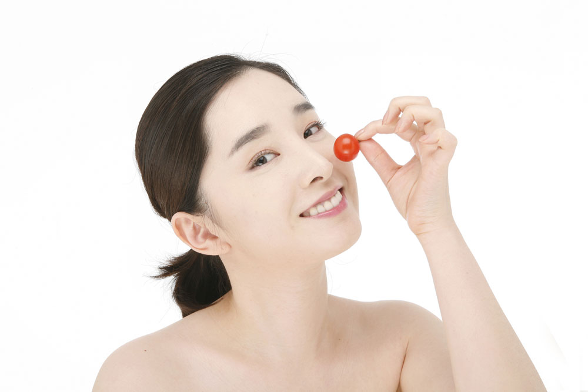
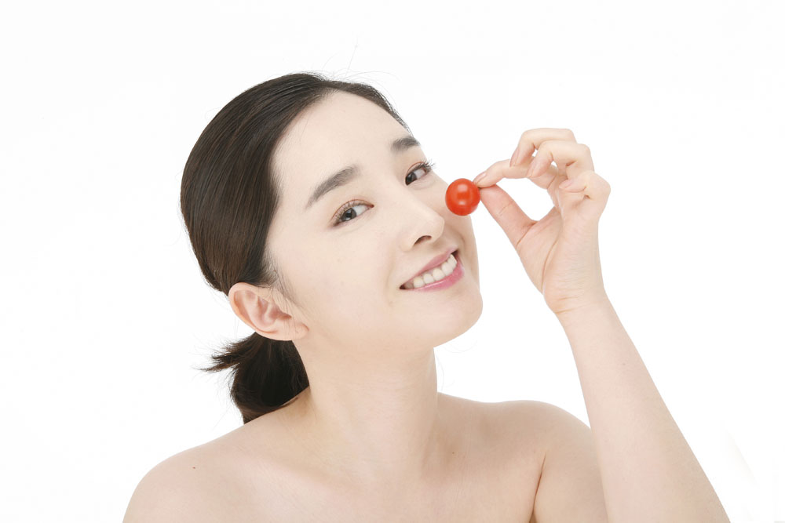

- 形体匀称健壮。
- 性格随和开朗。
- 肤色润泽，目光有神，鼻色明润，唇色红润，精力充沛，不易疲劳，耐受寒热，睡眠安和，胃口良好，两便正常，舌色淡红。
- 平和质所占人群比例约为32.75%。男性多于女性，年龄越大平和体质的人越少。

平和质是一种身体和谐、自稳能力强的体质，在神、色、形、态、局部特征等方面表现良好。拥有这种体质的人，往往有比较健康的遗传背景，生活规律，情绪稳定，体重波动小，对社会和自然环境的适应能力较强，很少生病，生病之后自我康复能力强。


 
